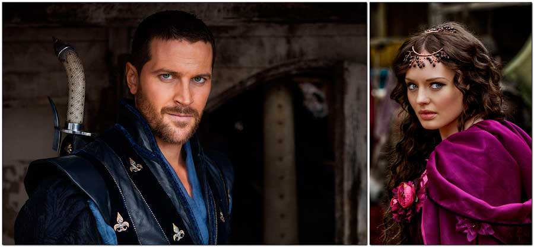

Рубрики
Изображения
Князь Святослав Игоревич

Князь Святослав – наш национальный герой! Какой он национальности?
Несомненно, лучшее изображение, когда-либо нарисованное в честь этого славного воина изображено в оглавлении этой статьи. Все знают, что Святослав был отцом троих сыновей: Ярополка, Олега и Владимира. Можно ли сказать, что именно Святослав ключевая фигура нашей древней истории? Как воин – возможно «да». Как правитель – скорее всего «нет». Вся короткая жизнь этого человека (а прожил он 30 лет) посвящена военным походам и доблестным победам:
По словам академика Б. А. Рыбакова: «Походы Святослава 965—968 годов представляют собой как бы единый сабельный удар, прочертивший на карте Европы широкий полукруг от Среднего Поволжья до Каспия и далее по Северному Кавказу и Причерноморью до балканских земель Византии».
3 июля – ДЕНЬ РАЗГРОМА КНЯЗЕМ СВЯТОСЛАВОМ ХАЗАРСКОГО КАГАНАТА
Разгром Хазарии, ставшей раковой опухолью на землях Славяно-Арийской Империи, переоценить просто невозможно! Не будь этой великой победы, история нашей цивилизации пошла бы совсем другим, более драматическим путём...
Для большинства русских людей все знания о Хазарии исчерпываются известными пушкинскими строками, по которым «вещий Олег» собирается «отмстить неразумным хазарам». В учебниках истории разгрому каганата князем Святославом посвящено лишь несколько скупых слов. Не упомянута победа Руси над могущественным южным соседом и в официально утверждённом списке дней воинской славы. Конечно, несколько изречений Святослава стали хрестоматийными («Иду на вы!» и т.д.), но мало для кого они ассоциируются с разгромом хазар.
Пока мы, русские, живы, мы должны помнить и славить Великие Победы наших предков. 3 июля 965 года дружина князя русов Святослава одержала убедительную победу над войском Хазарского каганата, порабощённого иудеями и превращённого в гнездо паразитизма на планете… (конец части цитаты с сайта http://mpaomsk.ru/eto-interesno/razgrom-knyazem-svyatoslavom-hazarskogo-kaganata.html)
Почитав этот текст, невольно возникает вопрос: если мы праздновали 1000 крещения Руси в 1988 году, то почему не праздновали 1000 юбилей победы над «гнездом паразитизма на планете». В 1965 году наверно нам было не до этого, потому что мы покоряли космос. Правда до этого в 1917 нас покорили… В честь 1040-летия в 2005* (11 июля 2006г.) был наконец установлен памятник нашему славному предку. Ещё чуть ранее 29 августа 2003 года был установлен памятник Святославу в Киеве. А на трёх сторонах пьедестала содержаться следующие надписи (на укр. языке!): «Великий Князь Киевский Святослав Игоревич (942-972 гг.)» (на лицевой), «Святославу Храброму – победителю Хазарии от благодарных потомков» (на боковой), «Памятник построен МАУП в 2003 году» (на тыльной).
Общая высота памятника составляет 9 метров, а высота фигуры князя Святослава - 3,5.
Звездочка (*) в дате 2005 означает, что с установкой памятника были некоторые межэтнические сложности (!)… Но мы здесь пишем собственного говоря не о политике и религии, мы здесь «рисуем» чужими рисунками.

Карикатура на князя видна даже невооруженным взглядом. Кто и когда рисовал Романовым картинки в царский титулярник в 1672году я не знаю, и тратить время на поиски имени художника не буду. Я просто выложу лист с официальной Родословнай великаго князя из потомковъ Рюрика:

Читаем, что в тексте черным по белому и русским языком написано: «Святославъ Игоревичъ, князь Новгордскiй и Кiевскiй. Родился въ 943г. Его супруги: 1) Болгарская княжна Предислава, отъ которой имЪлъ двухъ старшихъ сыновей; 2) Малуша, дочь Любчанина Малка, отъ которой имЪль сына Владимiра. + въ 972 г». В левом столбце написано, что он 5-ый по счёту правитель; а в правом, что его отец №4, т.е. Игорь Рюриковичъ. Сразу прошу обратить внимание на даты рождения Игоря и Святослава 877/943. Эта информация понадобится для следующей статьи.
Как Вы уже поняли, нам карикатуру слева нужно заменить на фото из исторического фильма таким образом, чтобы наш Владимир (Данила Козловкий) был похож на отца Святослава, и был такой же красавец…
- А почему на отца, а не на дочь Любчанина Малка? – скорее всего спросите Вы.
- А почему наследственность считается по мужской линии, а не по женской? – сначала поинтересуюсь я. А потом добавлю: - В «ненормальной» семье должна считаться по матери.
- Почему «ненормальной», и почему по матери?
- Допустим, ваша избранница забеременела не от вас, а из-за своего блудливого характера. А ребенок – это повод что бы выйти за вас замуж. Разве это нормально???
Сейчас выложу фото из фильмов, а там посмотрим на кого похож Владимир. Но прежде чем перейти к изображениям, прочитайте ещё раз текст, написанный на русском языке. Русский князь пишется «Влад-и-мiр». Имя трактуется так: всем людям в мире нужно жить в ладу и мiре между собой. Чем отличается «мир» и «мiр»?
Примерно, как эти два изображения:

Фото (слева) взято из телесериала «Спартак». Спартак был предводителем одного из крупнейших восстаний рабов в Римской республике в 70-х годах до нашей эры. Американцы вполне достойно изобразили храброго воина: симпатичный мужчина, мужественное лицо, осмысленный взгляд, целеустремленный вид…
Лиам Джеймс Макинтайр (род 8.02.1982г. = 30) австралийский актёр, имеющий ирландские и английские корни по предкам. В фильме «Кровь и песок» снялся в возрасте около 28 лет. С моей точки зрения очень удачный образ, да и исторические «роли» созвучны. Святослав поднял восстание в 70-х годах нашей эры против того что бы платить непомерную дань хазарам. Спартак поднял восстание, чтобы не работать рабски на римлян (отдавать все заработанное).
А как изображают в интернете храброго русского воина-предводителя восстания против хазар русские люди (изображение справа)?

На составном фото я изобразил маму князя Владимира и его отца. Малыш на руках черноокой женщины – это и есть наш будущий князь Владимiр…
Можно долго спорить могли ли так выглядеть внешне родители Владимира. Но то, что так выглядел сам князь в возрасте 5-6 месяцев надеюсь оспаривать никто из читателей нашего сайта не будет.
На данный момент я предложил уже семь портретов для собственного осмысления: могли ли так выглядеть люди, стоявшие у истоков создания нашей будущей необъятной Родины? Какое из фото вызвало у вас неприязнь, отторжение или сомнение?
Прежде чем выложить фото единокровного брата Святослава по имени Улеб (Глеб), шурина (брата первой жены Предславы) Володислава и остальных его современников того периода, я хотел бы поговорить о невестке Святослава по имени царевна Анна, часто именуемая как Византийская или Багрянородная.
Отец Владимира Святославича погиб, когда мальчику Володе было около 10 лет. Далее его воспитанием занимался дядя Добрыня. Слово «дядя» подразумевает, что это был брат отца или матери. Кто он мог быть, мы не знаем. Когда повзрослевший и возмужавший Владимир венчался с Анной в 988, то было это через шестнадцать лет после потери им отца. О том, жива ли была мама (условно называемая ключница Ольги Малуша) никто естественно не знает. Владимир был внуком Ольги, Анна была внучкой Константина. Никакие мысли не возникают?
Предлагаю подобрать портрет для Анны:

Очень радуют два момента: первый – картина, стоящая в поисковике на первом месте действительно очень красивая. На удивление(?) Википедия не решилась использовать этот красивый образ на личной странице https://ru.wikipedia.org/wiki/Анна_Византийская. Почему так происходит, догадаться не сложно… Второй момент - поисковик выдал на мой запрос что найдено 143 млн. результатов! Тема популярна среди людей всего мира. Но, к сожалению, сколько бы вы не прочитали статей, все будут примерно вот такие:
После восшествия старших братьев на престол Анна стала завидной невестой, чьей руки добивались правители соседних стран. В частности, историки упоминают среди ее женихов наследника Священной Римской империи Оттона III, которого Анна была старше на 17 лет, сына французского короля Гуго Капета Роберта II, а также одного из болгарских князей. По различным причинам эти союзы не состоялись.
В 988 году после захвата русами греческого города Корсунь (Херсонес) в Крыму, русский князь Владимир Святославича потребовал у византийских императоров руки их сестры, грозя в случае отказа взять приступом Царьград. Испуганные этим требованием, Василий и Константин согласились на брак, но при условии принятия князем христианства и оказания военной поддержки империи.
Брак византийской принцессы с «варваром» считался кощунственным и недопустимым. Еще в середине X века дед Анны император Константин VII Багрянородный написал для сына трактат «Об управлении империей», в котором выразил отношение правителей Византии к династическим бракам с варварскими северными народами, в числе которых указал и русов: «Если когда-либо народ какой-нибудь из этих неверных и нечестивых северных племен попросит о родстве через брак с василевсом ромеев, то есть либо дочь его получить в жены, либо выдать свою дочь, василевсу ли в жены или сыну василевса, должно тебе отклонить и эту их неразумную просьбу […] Поскольку каждый народ имеет различные обычаи, разные законы и установления, он должен держаться своих порядков, и союзы для смешения жизней заключать и творить внутри одного и того же народа».
Анна звалась Багрянородной — то есть рождённой в багряных пелёнках. Багряный цвет считался императорским, а ребенок, рождённый во время правления своих императорских родителей, обладал несомненным правом на византийский престол.
Современники дали Анне прозвище Руфа (Рыжая). Хотя ни описаний внешности Анны, ни портретов не сохранилось, она, скорее всего, походила на единоутробных братьев Василия и Константина. Они были голубоглазы, светловолосы, небольшого роста, но красивого телосложения. https://armenia.im/1/175549.html
…Испуганные этим требованием, Василий и Константин … диктовали князю свои жёсткие требования по принятию христианства… Прочитав несколько различных текстов, обратите внимание на то, что Анна часто считается женщиной армянского происхождения. Действительно ли Македонская династия была армянской? Кто вообще пишет нам тексты по истории, и какие основания у нас есть написанному верить???
Я долго искал фото, которое могло бы стать «образом» этой красивой и уникальной девушки, рожденной в порфире:

Харбанда Крити (29.10.1988г. = 38), актриса и фотомодель, родом из Индии. Мне сложно найти подробности её биографии на русском языке. Но чисто внешне взглянув на улыбку и карие глаза этой 29 летней девушки можно только глубоко вздохнуть: неужели у кого-то может быть такая необыкновенной красоты жена, дочь или внучка…
Да, может! Если это отец император (Роман II), если это дедушка (Константин VII) император, если прадед (Роман I) и (Лев VI) и прапрадед (Василий I) с прапрабабушкой (Евдокия I) – тоже императоры. Императорами были и два её брата (Василий II и Константин VIII), и наконец две племянницы (Зоя и Феодора) на удивление тоже были императрицами. А кто стал её мужем? Как вы наверно поняли, речь идет о родословной царевны Анны Багрянородной из Македонской династии.
Я посетил много исторических форумов в интернете. На некоторых их них часто обсуждают значение слова «багрянородный». Если послушать всех профессиональных специалистов по истории и таких доморощенных как я, то для того что бы стать багрянородным оказывается нужно завернуть ребенка в красную (багряную) пеленку, а женщине рожать в комнате с красными обоями. Что конечно же не совсем так, о чем и написано в статье: (https://ru.wikipedia.org/wiki/Багрянородный).
Осталось посмотреть, как будет смотреться наш Владимир рядом с нашей Анной. Возьмём Данилу Козловского из фильма «Викинг», сделаем стрижку, побреем, отмоем запёкшуюся грязь и кровь в императорском бассейне или бане в Константинополе, и сделаем совместное фото с восточной красавицей:

Вы бы не влюбились? Теперь понятно тяга Владимира к красивым женщинам. Уверен, что большинство из тех, кто читает эту статью думает: так не может быть. Не могли люди 1000 лет назад иметь такую приятную внешность. Тогда предложите свой вариант, а мы с удовольствием разместим ваше видение отдельной статьей на сайте.
Я тоже, когда смотрю на вот это ( https://myslide.ru/presentation/kievskaya-rus-pri-vladimire-svyatoslaviche ), то думаю: так не может быть:

Девушка похожа на красавицу и армянку. А женишок с родителями на кого похож? Таким пугалом только ворон в огороде пугать. Когда я увидел это и подобные слайд-шоу, то подумал: творчество наших учащихся изучивших историю по школьной программе наталкивает на мысль: …это кто ж такое рисовал!!!
Для того что бы нам отобразить на Родовом дереве семейные связи, нужны не только прямые потомки и предки, но и не кровные родственники. Если у Ольги был сын Святослав, а у императора Константина был сын Роман, то после венчания внуков (Владимира и Анны) кем они становятся? Правильно – СВАТАМИ! Рисуем сватов…
Есть такой сериал «Сваты», веселенький и пародийный. Повеселимся немного и мы над сватами в Х веке. Поисковик не выдает нам целевые изображения по запросу «императрица феофано» и «император роман 2 константинович». Родители Анны оказывается никому не интересны. Но зато есть 2 млн. страниц с текстами, где встречается это имя. Почитать про блудницу хотят многие, посмотреть на неё – НЕТ?

Раз красавиц в поисковике нет, то рисуем образ с нуля, и конечно сначала её маму (сватью нашего Святослава):

Первое изображение - карикатура (не забываем, что Анастасия родила двух императоров), в центре – образ красивой и порочной женщины, и наконец справа – настоящая картина и образ императрицы. Анжелина Джоли (род. 4.06.1975г. = 32) американская актриса, кинорежиссер, сценарист и фотомодель. Обладательница премии «Оскар», трёх премий «Золотой глобус» (первая актриса в истории, три года подряд выигравшая премию) и двух «Премий Гильдии киноактёров США». Я написал это имя для того, чтобы сделать фото из фильма «Клеопатра».
Царица Клеопатра VII – последняя царица Египта из Македонской династии (69-30 г. до н.э.). Прославилась благодаря драматической истории любви к римскому полководцу (Марку Антонию). В годы её правления Египет был покорен Римом. Императрица Феофано (точнее самозванка в Македонской династии) прославилась благодаря драматической любви к полководцу Никифору Фоке. В годы её правления (959 – 969 г. н.э.) Египет был под властью Восточной Римской империи… Либо история 1000 лет не меняется, либо идет одними и теми же тысячелетними кругами.
Проститутка Анастасия, назвавшая себя Феофано, родилась в 941, Святослав в 942-ом. Если бы они дожили и присутствовали на венчании в 988 году, то им было примерно по 48 лет. Каждый из них оделся в национальную праздничную одежду и … тогда за праздничным столом они выглядели примерно так:

Остался последний штрих: образ князя Святослава (на основе актёра из фильма «Спартак») подтянуть* под образ императрицы (на основе актрисы из фильма «Александр») так, чтобы они сочетались. Идем в константинопольские бани и подсматриваем, кто там парится. Ого! – сват и сватья…

Здесь необходимо сделать небольшое пояснение: Восточная Римская империя – это красиво, богато и … очень эротично. Эротика сплошь и рядом присутствовала в культуре и искусстве этого государства. Всё, что мы читаем о Византии в сохранившихся документах Константина, не содержит ни слова об этом, как нет ни слова ни о христианстве и тем более православии. Зато в этих же самых документах написано, что княгиня Ольга приезжала в гости к Константину до и после смерти Игоря (отца Святослава). Там же сказано, что русская княгиня беседовала с императором и его супругой в их опочивальне (спальне по-нашему). Годы приездов к сожалению там не указаны, но зато написано, что в то время у Константин и Елены уже были внуки. Слово «внуки» подразумевает, что их должно быть как минимум два или три. Внимательный и интересующийся читатель проверит, что в 958 году, когда Ольга была в Константинополе якобы на её «крещении», тогда же родился будущий император Василий. Ни месяц, ни дата рождения внука опять же не указана, что абсолютно недопустимо для этой императорской четы. В 958 году Святославу было 16 лет, императору Роману было 20 лет и у него уже была дочь по имени… внучка итальянского короля Гуго. А за праздничным столом сидели ещё пять молодых царевен: Феодора, Зоя, Феофано, Агафья и Анна. Одна из них уже была императрица.
Непонимание кровных родственных связей между Русью и Византией приводит к тому, что наша история написана так, что будто бы наши предки воевали между собой. А стертая Византия в умах современных людей существует как примитивное, погрязшее в религии государство. Та ложь, которую мы читаем про Византию, ничем не отличается от лжи, которую мы видим на экранах сегодня, и при помощи которой развязана война между Россией и Украиной. Мысленно читая про конфликты в прошлом, мы материализуем их в настоящем. И всегда есть тот, кому это нужно… Мне это не нужно, поэтому я не буду пока рассказывать кто такая Милолика Болгарская (ещё одна невестка князя Святослава), а только выложу несколько фото из разных исторических фильмов:

Князь Глеб Игоревич (единокровный брат Святослава), князь Володислав Игоревич родной брат Предславы (первой жены Святослава) а значит родной дядя Ярополка и Олега Святославичей.
Князь Володислав (очень любил охоту и собирать оленьи рога, за что и был прозван местными жителями Рогволдом) и его жена Анастасия (мама Гориславы). Володислав был внуком Вещего Олега, Черниговским и Тмутараканским князем. Вещий Олег дружил и общался с императором Львом, Константин дружил и общался с отцом Володислава. На ком женился Володислав догадаться не сложно… Как и не сложно догадаться кто виноват в смерти Святослава.
Для информации: все изображения из зарубежных исторических фильмов взяты исходя не из смыслового и идейного содержания художественных картин, а только по внешности актёров и внешнего вида (одежды и обстановки вокруг).


Святославу посвящено много в нашем искусстве, нарисованы картины, написаны книги, установлены памятники. По-разному написаны и нарисованы, потому что правду очень сложно восстановить через столько лет. Описание внешности князя, в которой упомянут знаменитый чуб и серьга в ухе, принадлежит историку Льву Дьякону. Тот подробно документировал период истории с 959 по 976 год, именно эти 17 лет у власти были узурпаторы, «славные» дни правления которых он и документировал. Можно ли верить человеку - подхалиму нашего врага, из-за которого погиб Святослав? Современные «панки», молодежные субкультуры «готы» и «эмо» с ярко выраженными неестественными прическами, серьгами и прочей атрибутикой – всего лишь протест против себя и других. Быть может, в то время выбритая голова и длинный чуб были не признаком знатного рода, а знаком раба, преступника или полового извращенца?

Весной, после сложной и голодной зимовки 971/972 года, князь Святослав погиб от рук печенегов, а их предводитель хан Куря надругался над телом славного воина. Последний бой Святослава состоялся 21 июля 971 года у крепости Доростол. Князь был ранен… Количество его воинов по разным источникам колеблется от 10 до 60 тысяч (!?). Что помешало с июля до зимы пройти даже с отрядом в 100-200 отборных воинов через малозаселенные земли печенегов до Киева? Почему нужно было идти именно водным путем, который был намного сложнее и длиннее почти в два раза? Так ли это было, мы доподлинно не узнаем.

Но мы можем узнать, как будет выглядеть следующий шаг при рисовании Родового дерева. Добавляем подобранные портреты и смотрим, что получается:

На данном шаге мы видим, как появились две линии портретов. Я эту линию называю своеобразным термином «кармический слой». Мы видим людей, который жили примерно в одно время: 1 слой (линия) Олег, Ярополк, Анна, Владимир, Горислава, братья будущей Полоцкой княжны. И 2 слой (линия) Глеб, Анастасия (Анастасо), Предслава, Малуша, Анастасия, Володислав. Эти люди видели друг друга, общались, дружили и враждовали. В зависимости от того, как сложились их отношения - такую карму они наработали. Если реинкарнарнация существует, то логично, что потомки этих людей (с частичкой прошлой жизни) должны в какое-то время встретиться в новой жизни…
Для того, чтобы связать это с науками* астрология и нумерология, я пишу даты. Астрологи и нумерологии пытаются расшифровать нашу судьбу по дате рождения. Имея для анализа даты появления на свет различных людей, мы можем проверить, так ли это на самом деле. Скажем так: в какой степени это практические и нужные науки, а в какой обман – т.е. нам с Вами просто «пудрят» мозги…
Продолжение »
{kind=link}